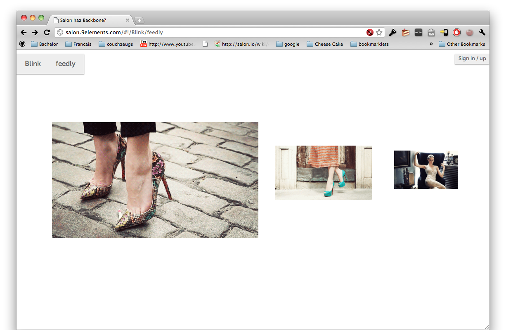
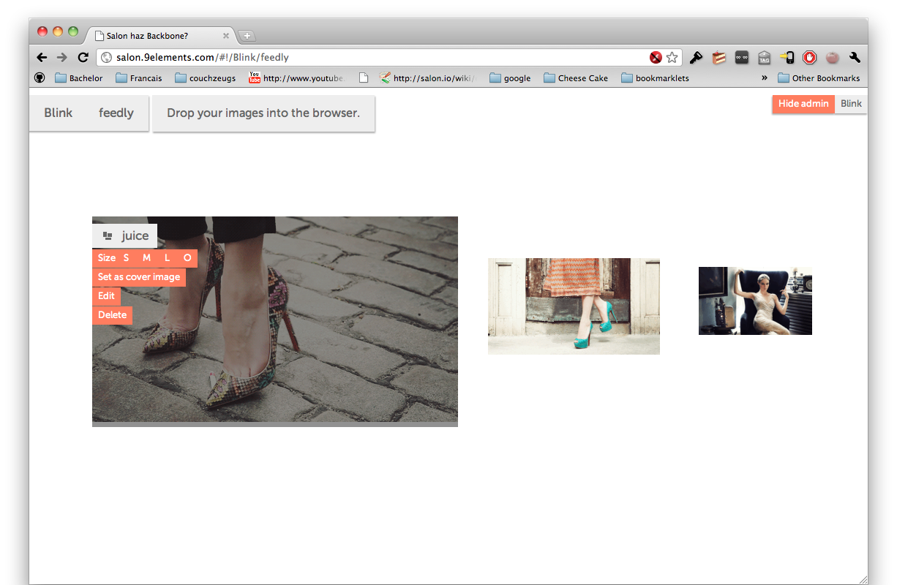

Design and implementation of a web-based platform to present designer-portfolios
I. Structure
- I. Salon
- Introduction
- Idea
- Platform
- Demo
- Quo vadis Salon?
- Evaluation
II. Structure
- II. Single Page Web Apps
- Introduction
- Comparison
- Differences
- Benefits
- Problems
- Conclusion
I. Introduction
- The Internet has been built to present and to connect scientific information.
- Static content, generated by researchers.
I. Introduction
- Nowadays, websites have become more interactive.
- Content is very often generated by users.
I. Introduction
- Most portfolio tools on the web are not interactive (e.g. Flickr).
- Portfolios / Profile Pages all look the same.
- These pages feel like "the old Internet"
- Portfolios should represent the user's creativity
I. Idea of Salon
- Introducing: Salon, a portfolio platform for designers.
- Focus on interactivity and creativity.
- No static layouts: Everything is draggable / customizable
- Idea developed at HFG Offenbach by Dipl-Inf. Deutsch and Dipl-Des. Landrock.
I. The Platform: Components
I. The Platform: Users
I. The Platform: Users
- Each page is shown with its cover image
- Layout draggable
- Positions are saved to the server
- No disturbing extra information
- Clear focus on the designer's work
I. The Platform: Pages

I. The Platform: Pages

I. The Platform: Pages
I. The Platform: Pages
- Users can hide pages -> don't appear in overview but are reachable via the URL
- Users can show other users previews of their unfinished work
I. The Platform: Images
I. The Platform: Images
- Images can link to three different targets: to its detail-page, to a user's page and to external URLs
- This allows to connect pages, users and gives users another way to create creative pages
- Each of the link targets has its own icon
I. The Platform: Images
- Images can have tags which make them searchable
- Animated gifs are also supported (extensive usage)
- Each image is available in four different sizes
I. The Platform: Images
I. The Platform: Menu
I. The Platform: Navigation
- Bread-crumb navigation with focus on the user
- Easy to navigate through a user's set of pages and images
- Salon-elements are always on top -> always reachable
I. The Platform: D&D
- Most important UI feature
- Self-implemented library because others lacked of features
- Multi-touch support, cross-browser, mobile-friendly
- Small footprint
I. Salon demo
DEMO
I. Quo vadis Salon?
- More assets (video, text, music...)
- More animations
- Remix-me feature
- Custom CSS and / or JavaScript
I. Evaluation
- Fun to use
- Maximum freedom for users
- Clean architecture
- Customizable
II. Introduction
- Unlike the websites, web architectures have not changed much
- Thin-client architecture
- This architecture gets in the way when websites do more stuff client-side (AJAX)
- Business-logic and rendering on the client-side AND on the server-side (-> confusion)
II. Introduction
- Introducing: Single Page Web Apps
- Fat-client architecture (server only for persistence)
- Business-logic and rendering on the client-side only
II. Comparison: Traditional
II. Comparison: Single Page
II. Differences
- URLs change from domain.tld/test/123 to domain.tld/#!/test/123
- Rendering completely on the client-side
- New development-helpers for authentications, internationalization and forms
- Primary programming language: Javascript (or languages that compile to Javascript e.g. CoffeeScript)
II. Benefits : Speed / Efficiency
- Slim transport format (fast serialization, fast transport)
- Server does not need to render views
- Especially good for mobile users
II. Benefits : User Experience
- Speed leads to a better overall UE
- Need for loading indicators
- Transitions between page changes
II. Benefits: Media
- No complete reload means that media can be played in the background while surfing
- Good for music-centric pages
II. Benefits
These slides are a Single Page Web App as well:
Start
Stop
II. Problems: SEO
- Search engine crawlers do not execute Javascript
- SPWAs do not get indexed
- Google proposed a technique, but it leads to code duplication and only Google will index pages accordingly
II. Problems: New Tools
- Lack of tools that cover the complete development chain
- Developers need to learn a lot new technologies
II. Problems: Exposure of Business Logic
- All business-logic is exposed to the users
- Modern javascript development tools let users change a websites behavior
- Client-Server communication is "open" to the users
- "Solutions": code-obfuscation; don't implement banking websites as SPWAs
II. Problems: Accessibility
- Users with Javascript disabled cannot use SPWAs
- Screen readers are unable to correctly interpret in-place DOM updates
- Solution: WAI is going to publish a new guideline that deals with these problems
II. Conclusion
- Overall better UE, more creative UIs
- More work for developers
- Implementing a website as SPWA can only be decided for each case on its own
Thx for your attention!
Any questions?
The thesis is hosted on Github: https://github.com/janmonschke/Bachelor-Thesis
It provides more detailed descriptions to the topics mentioned above and also more solutions to the problems with SPWAs
III. Appendix : Technology
- Ruby on Rails
- MongoDB with Mongoid
- Backbone.js
- Brunch
- CoffeeScript
III. Appendix : Acknowledgements
- My proofreaders: Dominik, Isabel, Thomas, Eray, Sebastian
- Jeremy Ashkenas for Backbone.js and CoffeeScript
- The brunch-team for brunch ;)
- Everyone that supported me while working on this thesis
- The author of this slide system: Hakim El Hattab